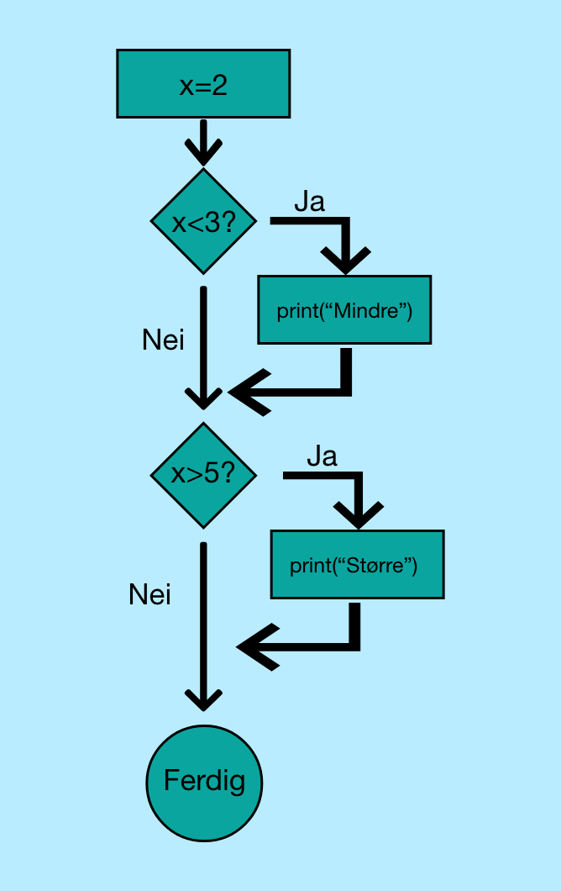

x=2
if x < 3:
print(f"{x} er mindre enn 3")
if x > 5:
print(f"{x} er større enn 5")
Merk deg måten vi har skrevet strengene i print-funksjonen. Når vi skriver
print(f"{x} er mindre enn 3")
i print-funksjonen, så bruker vi noe som heter en f-string. En f-string har en f i begynnelsen, og krøllete parenteser
som inneholder variabler som vil byttes ut med verdiene til variabelen. Dette er altså en god måte å lage strenger som inneholder
variabler

Koden til et if-uttrykk blir bare kjørt dersom resultatet av spørsmålet som blir stilt er sant (True). Dersom
resultatet av spørsmålet ikke er sant (False), så blir linjen hoppet over.
I hvilke tilfeller vil ifølge flytdiagrammet ovenfor linjen "Større" blir printet av programmet?
- and:
x > 0 and x < 10gir True, dersom x er større enn null og mindre enn 10. - or:
x > 0 or x < 10gir True, dersom x er enten større enn null eller mindre enn 10 - not:
not x < 10gir True, dersom x ikke er mindre enn 10
x=20
if x > 10:
print(f"{x} er større enn 10")
if x < 30:
print(f"{x} er mellom 10 og 30")if/else.
x=20
if x > 10:
print(f"{x} er større enn 10")
else:
print(f"{x} er 10 eller lavere")x=20
if x < 5:
print("Small")
elif x < 10:
print("Medium")
else:
print("Large")elif x<10. Hvis denne testen gir True, så printes "Medium", også avsluttes
koden. Dersom resultatet av denne testen også er False, så vil det som står under else skje, og "Large" skrives til konsollen.
Du kan ha mange elifs! Det er da viktig at du har satt de opp riktig, slik at prioriteringene er riktig.
- Sjekker if-setningen: Dersom resultatet er True så kjøres if-blokken og testingen stoppes.
- Dersom resultatet gir False, går programmet til første elif-setning. Dersom det gir True så kjøres elif-blokken og testingen stoppes.
- Gjør steg 2 til alle elif-blokker er sjekket.
- Dersom alle testene returnerer False, så kjøres else-blokken og testingen stoppes.